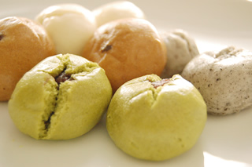

The japanese candy manju
The description
Manju is a classic Japanese confectionery (wagashi). When you crave for a fun, sweet treat, these dumplings will hit the spot!
Ingredients
- ½ cup brown sugar (packed) (½ cup packed = 80 g)
- 3 Tbsp water
- ½ tsp baking powder
- ½ tsp water (for mixing with baking powder)
- 1 cup cake flour (1 cup = 135 g)
- 8.5 oz red bean paste (8.5 oz = 240 g)
The recipe

Gather all the ingredients. Cut a sheet of parchment paper into twelve (12) 2.5” x 2.5” (6 x 6 cm) sheets. In a small saucepan, add water and brown sugar, and whisk to dissolve the sugar. Transfer to a large bowl and set aside to cool. Meanwhile wet your hands with a little bit of water and make 12 balls of red bean paste. Each ball should be about 1 scant Tbsp (20g). Combine baking powder and water. Add to the cooled brown sugar mixture and mix all together. Sift the flour and add to the brown sugar mixture. Combine the mixture with a silicone spatula, chopsticks or fingers. Pinch the clumps together into a ball. Cover with plastic wrap and set aside to rest the dough for 15 minutes in the bowl. Transfer the dough on a floured work surface and knead for 1-2 minutes, incorporating flour as necessary to get rid of stickiness. The texture of the dough should be pliable (in Japanese, we say the texture should be similar to the texture of ear lobe). Do not over knead. Once the dough is no longer sticky and smooth, form the dough into a stick, and cut into 12 pieces. Cover them with a damp towel to prevent the dough from drying. Form one portion of the dough into a ball and flatten it so it becomes 2 inch (5 cm) in diameter. Then flatten the piece with your fingers and roll out to form a circle shape about 2.5 to 3 inch (6-7 cm) in diameter. Only stretch the outer edges of the dough and keep the center thick. Place the red bean ball in the middle and pull each corner into the center and pinch to close the dough. Now you know why we need the outer dough to be thin. If you have thick outer dough, the pinched area will be harder to fold in. Place the manju on the working surface, seam side down. Rotate the dough a few times to shape nicely. Place it on to the parchment paper. Cover the manju with a damp towel to prevent from drying. Repeat with the remaining dough. Set up a steamer. Fill the wok (or pot) with 2 inches of water. Bring the water to a boil. Steam for 10-12 minutes with high heat (this creates lots of steam). Once they are done cooking, remove manju from the steamer and let cool on a wire rack or bamboo sieve (so the air/heat won’t trap on the bottom of manju). While they are still warm, wrap each manju with plastic wrap individually. This will help to retain the moisture. Enjoy!
Gallery
{kind=link}
{kind=link}
{kind=link}